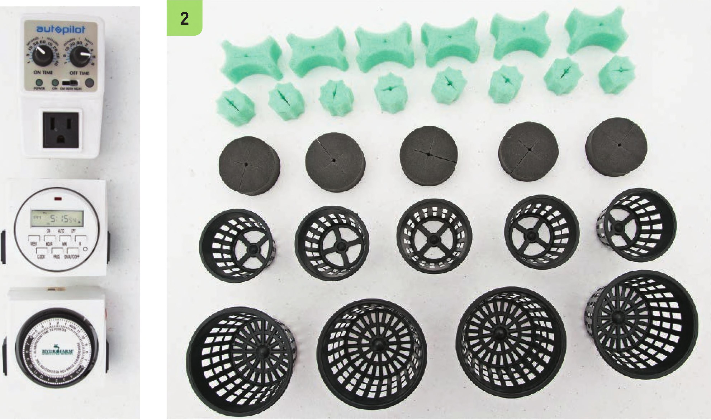

There are many options for outlet timers. The ideal timer for an aeroponic system works in very short intervals, as short as a couple of seconds. Most timers work in 15-minute intervals, and these can do the job as well. Prepare the Reservoir and Lid The reservoir selection is very important! It should have a tight-sealing lid. When the aeroponic irrigation turns on, there is a lot of spraying, so make sure the lid fits tightly to prevent leaks. Five-gallon buckets also work great and come with a tight-fitting lid. 1 Spray paint the reservoir if it is not already opaque. Make sure light does not reach the nutrient solution, because it can encourage algae development. 2 The lid can be modified to fit a variety of net pot sizes or foam inserts. Foam inserts are very popular for rooting cuttings, and 2" or 3" net pots are great for growing herbs and leafy greens. 3 Aeroponic systems designed for rooting cuttings can fit many sites for foam inserts. These sites are sometimes spaced 2Vi apart. This aeroponic system will be using net pots spaced 3" apart, which is suitable for a variety of herbs, baby green mixes, and some miniature romaine lettuce varieties. Space the net pots 6" apart to grow full-size lettuce. Mark the lid with the location of the plant sites. HYDROPONIC GROWING SYSTEMS 109
